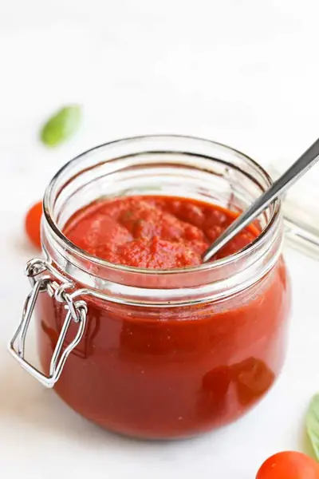

Pizza Sauce

Ingredients
- 1/2 tbsp Olive Oil
- 2 cloves Garlic, minced
- 700g (3 cups) Passata
- 170g (6oz/¾ cup) Tomato Paste (puree in the UK)
- 1 tsp Dried Oregano
- 1 small handful Fresh Basil Leave, thinly sliced and chopped
Steps
- Add the olive oil and garlic to a saucepan and cook over medium heat for 1-2 minutes, until the garlic is fragrant.
- Add the passata, tomato paste and oregano to the pan and stir to combine.
- Allow the sauce to come to a simmer and then reduce the heat to low and simmer for a minimum of 10 mins. (longer if you wish to develop flavour more or thicken).
- Add the chopped basil and stir through.
Recipe by Healthy Little Foodies, from Healthy Little Foodies. Saved here for personal use; the original has the full notes, tips and photos. Open original